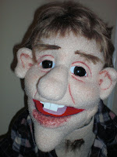
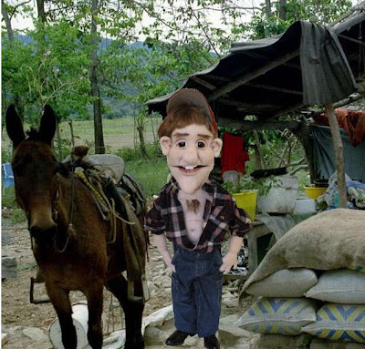

New arrival at the Dummy Shop
2/22/2009
Yesterday's post was about developing character for a vent figure. The following email I received from The Dummy Shop which includes "Taylor's" bio is a perfect example of how this can be done. If you are interested in purchasing "Taylor" you will find contact information for The Dummy Shop at the end of this post.
* * * * * * * *
The Dummy Shop
Puppets by JET
BIRTH STATISTICS
The Dummy Shop is pleased to announce the arrival of "Taylor". Taylor is a 37" tall, back entry, full soft sculptured puppet. He was handcrafted by JET with loving attention to detail. He is covered in Muppet Fleece. He comes fully dressed as you see him, and has JET's trademark finger pillow with retention straps for your fingers, and a thumb strap. His head cavity is big enough for a large hand.
Taylors Bio
Taylor's people came from the hills. He cut his baby teeth on a plug of Red Man.
He is proud to call himself a 'redneck', knowing that the definition of 'redneck' according to Jeff Foxworthy is "The glorious absence of all forms of culture". Taylor just knows that this is good, because he believes that culture is something that grows on your tooth when you don't keep it brushed. For a young man Taylor has already achieved his biggest goal in life. He already has a pickup truck. He thinks that a career is the back end of an automobile. He loves fresh road-kill for Sunday dinner. He enjoys huntin' & fishin'. These are the hobbies of real men.
The only thing that Taylor has yet to accomplish is to get himself a 'woo-men'. (Redneck for woman) He is working on a plan to get-it-dun. Mary Lou, his father's, brothers little girl has kind of caught his eye. She thinks the little tuft of hair growin' on Taylors chest is kinda purty! Taylor has it kind of 'figgered' that he can save some money with Mary Lou, 'cause she don't even have to git a new last name', and her Daddy promised him that she comes with her very own coon dawg!
Puppets by JET
{kind=link}

BIRTH STATISTICS
The Dummy Shop is pleased to announce the arrival of "Taylor". Taylor is a 37" tall, back entry, full soft sculptured puppet. He was handcrafted by JET with loving attention to detail. He is covered in Muppet Fleece. He comes fully dressed as you see him, and has JET's trademark finger pillow with retention straps for your fingers, and a thumb strap. His head cavity is big enough for a large hand.
Taylors Bio
Taylor's people came from the hills. He cut his baby teeth on a plug of Red Man.
He is proud to call himself a 'redneck', knowing that the definition of 'redneck' according to Jeff Foxworthy is "The glorious absence of all forms of culture". Taylor just knows that this is good, because he believes that culture is something that grows on your tooth when you don't keep it brushed. For a young man Taylor has already achieved his biggest goal in life. He already has a pickup truck. He thinks that a career is the back end of an automobile. He loves fresh road-kill for Sunday dinner. He enjoys huntin' & fishin'. These are the hobbies of real men.
The only thing that Taylor has yet to accomplish is to get himself a 'woo-men'. (Redneck for woman) He is working on a plan to get-it-dun. Mary Lou, his father's, brothers little girl has kind of caught his eye. She thinks the little tuft of hair growin' on Taylors chest is kinda purty! Taylor has it kind of 'figgered' that he can save some money with Mary Lou, 'cause she don't even have to git a new last name', and her Daddy promised him that she comes with her very own coon dawg!

For pricing and availability, email: dummylady01@gmail.com